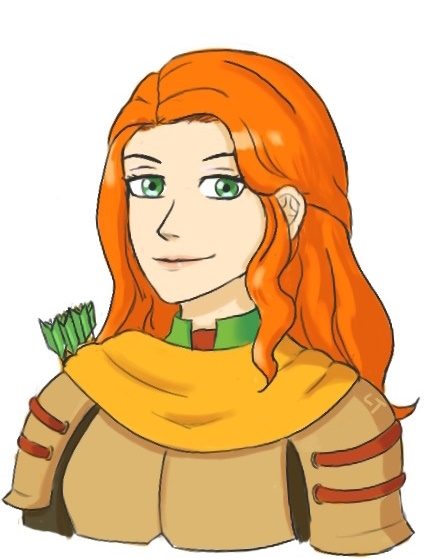
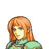
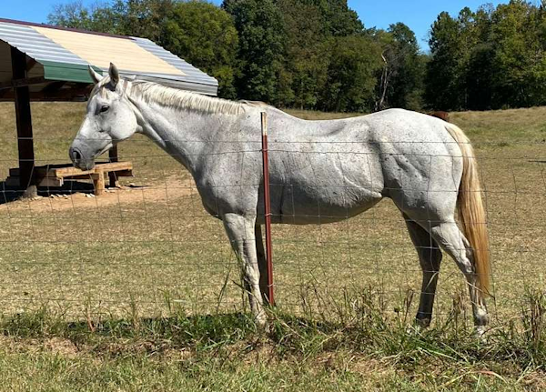
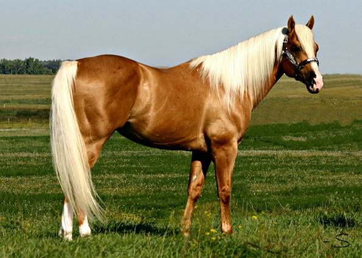

|
 |
Name: Tiana Danica Riegan Race: Human Gender: Female Sexuality: Straight/V poly Birthday: 5th of the Ethereal Moon(December 5th), 1141 Height: 5'3 Hair: Ginger, wavy, shoulder length Eyes: Green Skin: Pale or tanned Country: Leicester and Almyra
|
Personality: Reads people like books and is highly tactical. She's survived the roundtable for her whole life up to this point, and she knows when someone is being fake. Things that help her in the Almyran royal council, only now, she is allowed to throw hands to shut people up. Freedom is more important to her than making everyone like her. She loves feeling the wind in her hair, she loves hunting and riding her horse. She has always been a horse gal, animals in general like her: horses, dogs, etc. She will defend her loved ones, verbally and physically if needed, and she will come out of a fight with grace. Although she's adjusted to Almyra's proud warrior culture nicely, she still loves the finer things of Leicesterian culture and cuisine. She has her tea and berry pastries for breakfast every morning and she still uses Leicesterian slang. Appearance: Pale (although she tans ever so slightly from living in Almyra eventually) with ginger hair, normally shoulder length and wavy, and green eyes. She's built like a women's volleyball player or gymnast with lean muscle tone from her crest. Her preferred casual clothing is riding tunics and leather armor, but can dress herself up for fancy banquets and events. When she does, she'll wear a green and gold dress and do her hair nice with a ribbon or something in it. Likes: Horses, hunting, berry scones, proving the haters wrong Dislikes: Fake people, rattlesnakes, sandstorms, being forcefully woken up
|
Pre Canon:
Born as the second child of Archduke Oswald Michael von Riegan and Archduchess Rosamund Calla von Riegan. Her brother, Godfrey Sterling von Riegan, was five years old at her birth. She was raised with the expectations of a noble lady of the Leicester nobility, and her crested status made her valuable…but as she grew, she began to want to be more than some nobleman's wife. She attended Garreg Mach Officer's Academy, and while she was there she had a short fling with Leopold von Bergliez, which ended around graduation and they went their separate ways. Marriage offers began to come frequently, but she turned them all down, much to her father's chagrin. He encouraged her to pick someone ASAP and settle down.
Her big break, and leap into the unknown that defined her future, came when her father wanted someone to go to Almyra to attempt diplomacy and Godfrey refused. Tiana offered, saying that a noblewoman might make them talk more than a man armed to the teeth. Oswald allowed her, reluctantly, as long as she took backup and promised to come right back home if it turned ugly. She went with Count Justin von Ordelia and Countess Avril von Ordelia, and the Ordelias remained by her side as the young Almyran king, Boran al Kralsah, sanctioned her and tested her and considered her words. The Ordelias returned to Leicester after Tiana fell pregnant by the king (who she had been flirting with for a year before cutting loose just once at the harvest festival resulting in the pregnancy) and weren't always the happiest about Tiana's decision to stay in Almyra and make it work, but letters were exchanged and they remained friends.
During Canon:
The king named his and Tiana's son Khalid, and Tiana gave him Claude as an extra name "just in case". She was married to him and was going to make this work. A year after Khalid/Claude's birth, the king's other wife who he had actually been arranged with before Tiana arrived gave birth to her own son. Tiana was standoffish toward Jasmine but willing to meet her halfway and share the king with her, as long as it was only her and not like five more women. She made it clear that the tricule was closed or she was taking her son back to Leicester now. So Khalid/Claude was raised beside his half brother Uzair, and they continue to have a healthy bond.
A skeleton in the family closet, a demon from the past: Boran's ex lover, Nasira, returned. She had raised her son Shahid to hate his father and aim to take the throne by force. Civil war broke out, and Tiana's son was across the border attending the same academy his mother attended…so Uzair led the loyalists against the rebels. Tiana led her squadron of bow knights, the Golden Fox Chargers, as one part of the loyalist army. The war ended when the rebel prince was slain and his mother was sent to the gallows.
During some “cleanup” of the remaining rebel fighters, Tiana was hit with a hard enough blow that she fell off Charlotte, her trusty horse. When she woke up in the infirmary, she was informed that Charlotte had not survived the battle. She mourned the loss of her loyal steed, and found it a nice surprise that Boran’s wyvern, Simsek, also seemed to be mourning his horse friend. With time, Tiana welcomed a new horse who she named Charles.
Post Canon:
Tiana remained in Almyra as the “Red Vixen” queen (Jasmine was “Wildflower”) until Boran’s peaceful death of old age surrounded by family. She hugged her stepson Uzair, shook Jasmine’s hand, and returned to the land of her birth and the Riegan estate. There she enjoyed her retirement, but not without being stubborn and telling everyone what she thought with no filter. She spent her days teasing Holst Goneril, her daughter in law’s brother. She clashed a bit with her granddaughter Giselle as they were so alike. But overall the rest of her days were calm and happy.
|
RelationshipsGodfrey (brother) Boran (husband) Jasmine (fellow queen) Claude/Khalid (son) Uzair (stepson) Giselle (granddaughter) Collin (grandson) Charlotte (horse, grey mare) Charles (horse, palomino stallion) |
Starting Class
Archer
Best Class
Bow Knight |
Personal Skill:Second Wind Can act again, using the remainder of movement range, after defeating an enemy with a critical hit. |
Crit Quotes:"Think I can't kick your arse?" "Strategy fit for a queen!" "Be feathered now!"
Death Quote:"No regrets..." |


Extra Images
|
 GBA portrait |
Crest scan (Riegan manifested) |
|
 Charlotte (first horse) |
 Charles (second horse) |
Art from Scuffle